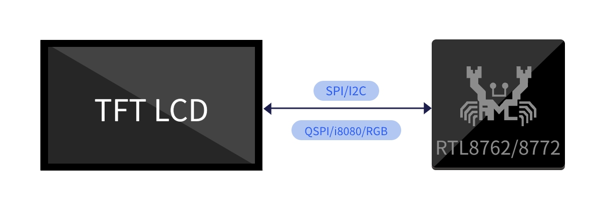
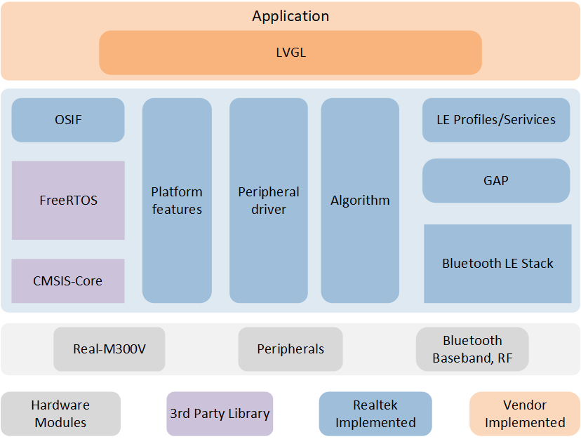
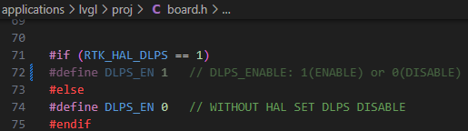

LVGL
LVGL (Light and Versatile Graphics Library) is an open-source embedded graphics library used for creating beautiful, high-performance, and customizable graphical user interfaces (GUIs). It is designed to be simple and flexible, making it suitable for various embedded platforms, including microcontrollers and microprocessors.
Overview
This document introduces relevant information about the LVGL solution based on Realtek RTL8772GWP. Its purpose is to assist users in setting up the development environment, including understanding the SDK, compiling and flashing firmware, and system testing methods. Developers can flash the test files from the SDK to ensure proper development environment configuration and that the EVB is functioning correctly.
Note
The example solution described in this article uses the Realtek RTL8772GWP EVB with an RGB (480 * 480) LCD display driven by st7701s and a touch screen module driven by gt911. If developers choose the same hardware environment as described in this article, they can directly run the sample project in the SDK.
If you need to adapt to other models of displays and input devices, please refer to section GUI Task for instructions on adapting to new display and input device drivers.
The Realtek RTL8772GWP chip supports display interfaces such as i8080, qspi/spi, and RGB888/RGB565.
Practical Application Case
The following diagram illustrates the modules included in the LVGL application:
{kind=link}

LVGL Application Modules
Supported Features
The Realtek LVGL application provides comprehensive functionality support:
Support LVGL
Support BLE OTA
Requirements
RTL87x2GWP EVB
LCD display module (480*480 st7701s + gt911)
ARM Keil MDK: ArmMDK
MPTool_kits: RealMCU-Tool
DebugAnalyzer: RealMCU-Tool
scons 4.4.0: run command in python environment pip install scons==4.4.0
Wiring
EVB
The EVB provides a hardware environment for user development and application debugging. The LVGL application uses the Model B EVB for demonstration, which consists of a mainboard and a daughterboard. The EVB has a download mode and a working mode. The download mode is used for functions like firmware burning, while the working mode is for normal operation of the application. Developer need to configure the EVB to enter the desired mode. For detailed information and instructions on using the EVB mainboard, please refer to Evaluation Board User Manual.

LVGL EVB Wiring
Configurations
The configuration of the LVGL solution in the SDK is located in SDK\applications\lvgl\proj\menu_config.h, you can check them in Configuration Wizard of Keil, the default configuration is as follows:
#if (CONFIG_REALTEK_BLE_SERVICE == 1)
// <q> DFU_SERVICE
#define CONFIG_REALTEK_DFU_SERVICE 1
#endif
#if (CONFIG_REALTEK_BLE_SERVICE == 1)
// <q> OTA_SERVICE
#define CONFIG_REALTEK_OTA_SERVICE 1
#endif
// <e> BLE_OTA_ENABLED
#define CONFIG_REALTEK_BLE_OTA 1
#if (CONFIG_REALTEK_BLE_OTA == 1)
// <q> SILENT_OTA
// <i> Transmit images while application running
#define CONFIG_REALTEK_SILENT_OTA 1
// <q> NORMAL_OTA
// <i> Enter dfu mode to transmit images
#define CONFIG_REALTEK_NORMAL_OTA 1
#endif
// </e>
// <e> BLE_DEMO_APP
#define CONFIG_REALTEK_BLE_DEMO 1
#if (CONFIG_REALTEK_BLE_DEMO == 1)
// <o> BLE_DEMO_APP
// <0=> BLE_OTA_DEMO
// <1=> BLE_PERIPHERAL_DEMO
#define CONFIG_REALTEK_BLE_DEMO_APP 0 // select ble demo app
#if (CONFIG_REALTEK_BLE_DEMO_APP == 0)
#define CONFIG_REALTEK_BLE_OTA_DEMO
#elif (CONFIG_REALTEK_BLE_DEMO_APP == 1)
#define CONFIG_REALTEK_BLE_PERIPHERAL_DEMO
#endif
#endif
// </e>
Note
After making configuration changes, the configuration will take effect when the project is rebuilt according to the supported compilation method. Please refer to the Building and Downloading steps for the building method.
CONFIG_REALTEK_BLE_DEMO,CONFIG_REALTEK_BLE_DEMO_APP: Enable the BLE demo app and select the desired demo from the configuration.CONFIG_REALTEK_BLE_OTA,CONFIG_REALTEK_DFU_SERVICE,CONFIG_REALTEK_OTA_SERVICE: These are the underlying support configurations for the ble OTA demo app. They should be enabled together with the OTA demo. Otherwise, disable these configurations.
Building and Downloading
Refer to Quick Start to build and download. It is worth noting that:
- In Generating Flash Map section:the developer need to generate the
flash_map.iniaccording to theSDK\applications\lvgl\proj\flash_map.h. - In Generating System Config File section:make sure to enable psram power. Other features can be configured as needed.

System Config Enable Psram Power
Building Keil MDK project, Generating App Image section:
The LVGL SDK project path is
SDK\applications\lvgl\proj.The Keil MDK project path is
SDK\applications\lvgl\proj\mdk.After modifying the project configuration, you need to rebuild the project configuration for the changes to take effect. After the build, a completely new project file will be generated based on the configuration, replacing the original project file. If the developer manually added files or configurations to the original project, those modifications will become invalid and won't be retained in the new project.
To build the project, open a cmd window in the project path.
Run the command scons --target=mdk5 to build the mdk project. Open the mdk project for compilation. The APP image will be generated in
SDK\applications\lvgl\proj\mdk\bin.SDK\applications\lvgl\proj> scons --target=mdk5 scons: Reading SConscript files ... ... CC xxxx.o CC xxxx.o ... LINK app.elf fromelf --bin app.elf --output rtthread.bin fromelf -z app.elf scons: done building targets.
Open the generated Keil MDK project and click on 'compile' to generate the app image. Refer to Generating App Image section.
For downloading and programming methods, please refer to Images Download.
Generating and downloading User Data:
LVGL project User Data packaging path:
SDK\subsys\gui\gui_engine\example\screen_lvglExternal files used in the project need to be packaged as User Data for downloading. Open the project User Data packaging path and place the files to be packaged in the
root\folder. Double-click themkromfs_0x4600000.batscript to generate the User Data fileroot(0x4600000).binand the resource mapping addressresource.h.Use the MP Tool User Data function to download the
root(0x4600000).binfile and download it to the address:0x04600000.
Experimental Verification
GUI Testing
After successfully flashing the firmware and UserData, switch the EVB to working mode and perform a reset to restart.
After the device restarts, you will see LVGL benchmark demo is running, it witll display the current test case and progress in the top left corner of the screen, and show the current frame rate and CPU usage in the bottom right corner of the screen.
There will be no log output and no touch screen interaction response until all test cases are completed. After completing all test cases, the test results will be displayed in logs and tables. You can scroll through the touch screen to browse the results.

LVGL UI Demo On PC Simulator
Software Design Introduction
This chapter provides an overview of the software-related technical specifications and behavior specifications for the RTL8772GWP LVGL solution.
Source Code Directory
Project directory:
sdk\application\lvgl\projSource code directory:
sdk\application\lvgl\src
Source files in LVGL application project are currently categorized into several groups as below.
└── Project: lvgl
└── app includes the LVGL user application implementation
├── menu_config.h project construct configurations
├── main.c
└── lvgl_init.c includes task and hardware init
├── lib
├── device
├── peripheral includes all peripheral drivers and module code used by the application
├── profile includes BLE profiles or services
├── dfu
├── dfu_task
├── LVGL includes all LVGL source
├── lcd_low_driver includes display pannel IC driver implementation
├── touch_driver includes touch IC driver implementation
├── hal_drivers
├── database
├── fs include file system implementation
├── port_lvgl
├── gui_dlps.c includes gui dlps configurations
├── lv.conf.h includes LVGL configurations
├── lv_port_disp.c includes LVGL display interface
├── lv_port_indev.c includes LVGL input device interface
├── lvgl_demo.c includes LVGL demo, benchmark demo
└── lv_port_fs.c includes LVGL filesystem interface
└── lvgl_assets includes user image and font C files
├── img_demo_lvgl_logo.c lvgl logo image array
├── lv_font_harmony_32.c harmony font array
└── lvgl_example_assets.c example shows how to set image and font source
:
└── ble_ota_app includes ble ota demo implementation
:
└── ble_app includes ble simple peripheral demo implementation
Flash Layout
Application default flash layout header file: sdk\application\lvgl\proj\flash_map.h
Example layout with a total flash size of 16 MB |
Size(byte) |
Start Address |
|---|---|---|
Reserved |
4K |
0x04000000 |
OEM Header |
4K |
0x04001000 |
Bank0 Boot Patch |
32K |
0x04002000 |
Bank1 Boot Patch |
32K |
0x0400A000 |
OTA Bank0 |
2456K |
0x04012000 |
|
4K |
0x04012000 |
|
32K |
0x04013000 |
|
60K |
0x0401B000 |
|
212K |
0x0402A000 |
|
2148K |
0x0405F000 |
|
0K |
0x04278000 |
|
0K |
0x04278000 |
|
0K |
0x04278000 |
|
0K |
0x04278000 |
|
0K |
0x04278000 |
|
0K |
0x04278000 |
|
0K |
0x04278000 |
OTA Bank1 |
0K |
0x04278000 |
Bank0 Secure APP code |
16K |
0x04278000 |
Bank0 Secure APP Data |
0K |
0x040AC000 |
Bank1 Secure APP code |
0K |
0x0427C000 |
Bank1 Secure APP Data |
0K |
0x0427C000 |
OTA Temp |
2148K |
0x0427C000 |
FTL |
16K |
0x04495000 |
APP Defined Section1 |
0K |
0x04499000 |
APP Defined Section2 |
0K |
0x04499000 |
Important
To adjust flash layout, flow the steps listed on the Generating Flash Map in Quick Start.
After flash layout adjustment, you must flow the steps listed on the Generating OTA Header and Generating System Config File with new flash layout file.
Software Architecture
The software architecture of the system is shown below:
{kind=link}

Software Architecture
Platform feature: Includes OTA, Flash, FTL and etc.
Peripheral driver: Provide application layer access to the interface of RTL87x2G peripherals.
OSIF: Abstraction layer for real-time operating systems.
GAP: Abstraction layer which user application communicates with BLE stack.
Application: The application layer contains user-defined application tasks.
Task and Priority
As shown below, 5 tasks have been created :

System Software Architecture
The description of each task and its priority is shown in table:
Task |
Description |
Priority |
|---|---|---|
Timer |
Implement the software timer required by FreeRTOS |
6 |
Lower stack |
Implement BT stack protocols below HCI |
6 |
Upper stack |
Implement BT stack protocols above HCI |
5 |
GUI |
Handling UI display and interaction |
1 |
Idle |
Run background tasks |
0 |
Note
Multiple application tasks can be created, and memory resources should be allocated accordingly.
GUI Task
In this example project, the default GUI task is the LVGL benchmark demo. It tests and demonstrates the performance of LVGL on this platform in various scenarios, including frame rate and CPU load levels.
UI
The main configuration items for LVGL are configured in sdk\application\lvgl\src\lvgl_port\lv_conf.h, including display device size, color depth, stack interface configuration, and more. Developers can customize these settings according to their needs.
For guidelines on designing and developing the LVGL UI, please refer to Designing Applications with LVGL and the LVGL online documentation LVGL Documentation. The document Designing Applications with LVGL provides detailed instructions on using a PC simulator, methods for real device porting, benchmark performance, UI resource conversion, and basic LVGL development methods. The document LVGL Documentation contains LVGL's development documentation, detailing its features and functionalities, along with numerous examples.
DLPS
DLPS (Dynamic Low Power State) is a system sleep mode characterized by low power consumption and quick entry and exit times, with RAM contents preserved. For details on how the system enters or exits DLPS and its specific behaviors, please refer to the Low Power Mode. For PSRAM low power settings, refer to the PSRAM.
In this example project, to configure and enable the DLPS feature:
Enable HAL support in the file
menu_config.h, then rebuild the project. For the build method, refer to the section Building and Downloading :

LVGL DLPS HAL Enable
Configure the enabling macro in the file
sdk\application\lvgl\proj\board.h:
{kind=link}

LVGL DLPS Enable
In this example project, after enabling the DLPS feature, the system will use the display's activation timeout as a sleep permit. When there are no touchscreen events for a certain period (e.g., 5 seconds), the screen will stop refreshing and turn off, and the system will enter sleep mode. When in sleep mode, if a new touchscreen event occurs, the system will wake up, the screen will turn on, the program will continue to run, and a new sleep countdown will begin. Specifically, before entering sleep mode, the system will configure the INT pin of the touchscreen IC as a wake-up source. When a touchscreen event occurs, the touchscreen IC will generate a level change on the INT pin, which will wake up the host, i.e., PAD wake-up.
If the Bluetooth feature is enabled, Bluetooth will periodically wake up the system to broadcast while in sleep mode but will not wake up the GUI task. The wakeup behavior of the Bluetooth task can be developed according to developers' needs (e.g., whether to wake up all tasks via Bluetooth). To configure the hardware and software states when entering and exiting sleep mode, everything is defined in the file sdk\application\lvgl\src\dlps\gui_dlps.c.
- Note:
1.Do not perform long-time-consuming actions, such as delay waits, in
bool gui_dlps_enter(void)()withingui_dlps.c.
static void gui_hook_af(void)
{
/*Add your hook function here*/
#if (DLPS_EN == 1)
// Demo dlps
/*Normal operation (no sleep) in < xx sec inactivity*/
if (lv_disp_get_inactive_time(NULL) < 5000)
{
gui_dlps_set(false);
}
/*Sleep after xx sec inactivity*/
else
{
// check other task state
// wait transform done here
gui_dlps_set(true);
}
#endif
}
static void lvgl_demo_run(void *p)
{
...
gui_dlps_init();
...
while (1)
{
if (gui_dlps_check() == false)
{
/* hook function before lvgl event */
gui_hook_bf();
lv_task_handler();
/* hook function after lvgl event */
gui_hook_af();
// os_delay(5);
}
else
{
// DBG_DIRECT("stop timer");
/*Stop timer and suspend gui task*/
os_timer_stop(&gui_timer0);
os_task_suspend(lvgl_task_handle);
}
}
}
BLE Task
For the BLE_OTA_DEMO, please refer to OTA .
For the BLE_PERIPHERAL_DEMO, please refer to LE Peripheral .